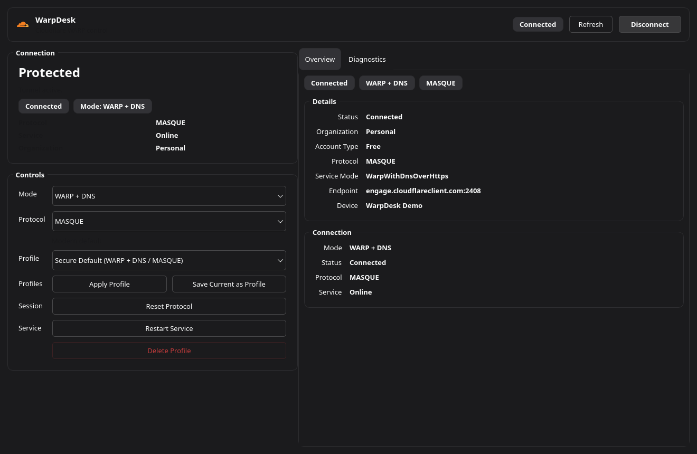

WarpDesk
Un frontend nativo más limpio para Cloudflare WARP en Linux, pensado para quien quiere controlar el servicio, perfiles y diagnóstico sin vivir dentro de una terminal.
Made with 🖤 in Barcelona City 🇪🇸

Conecta, desconecta, reinicia el servicio y cambia el modo del túnel desde una ventana de escritorio real.
Mantén visibles de un vistazo el diagnóstico, el protocolo activo, los detalles de cuenta y las acciones rápidas.
Guarda perfiles repetibles y mantén la interfaz alineada con el tema y el idioma activos del sistema.
WARP en Linux funciona. La experiencia de escritorio necesitaba más disciplina.
WarpDesk no intenta sustituir el backend oficial. Envuelve warp-cli y warp-svc en una GUI más clara y operativa para quien prefiere contexto visible antes que memorizar comandos.
- Estado de conexión y control de protocolo y modo
- Guardar, aplicar y borrar perfiles
- Vista de diagnóstico y accesos rápidos en bandeja
- Soporte para inglés, español y catalán
- Estilo Qt adaptado a la paleta del escritorio